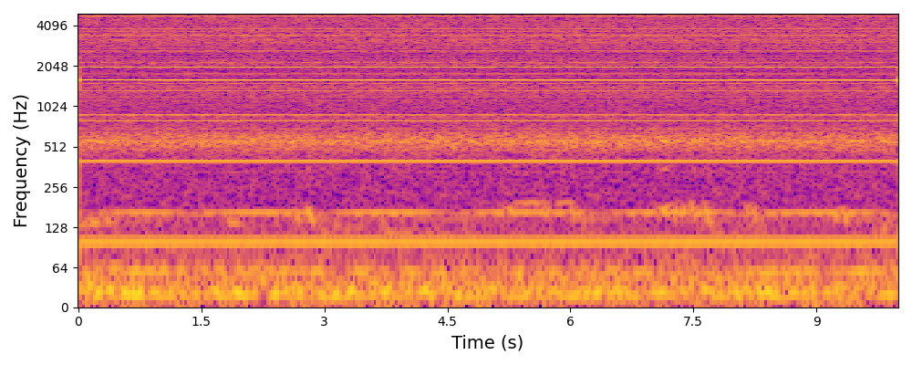
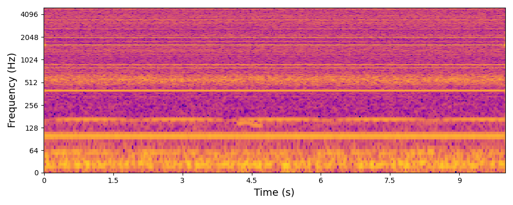
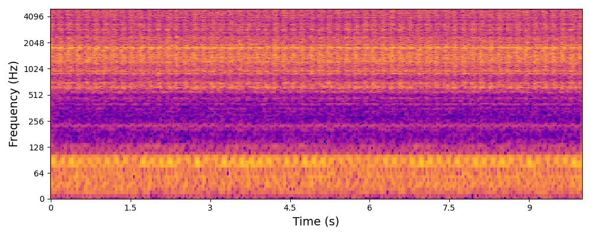
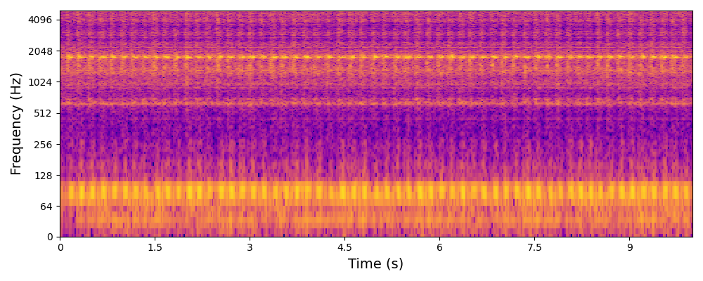
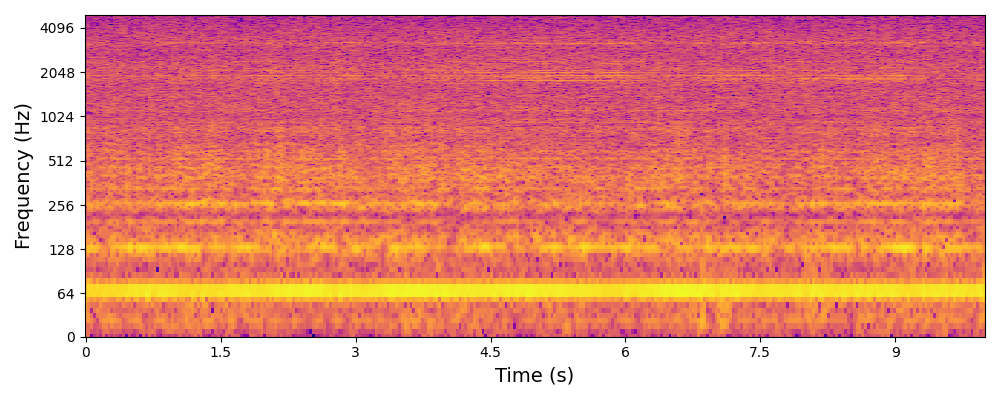
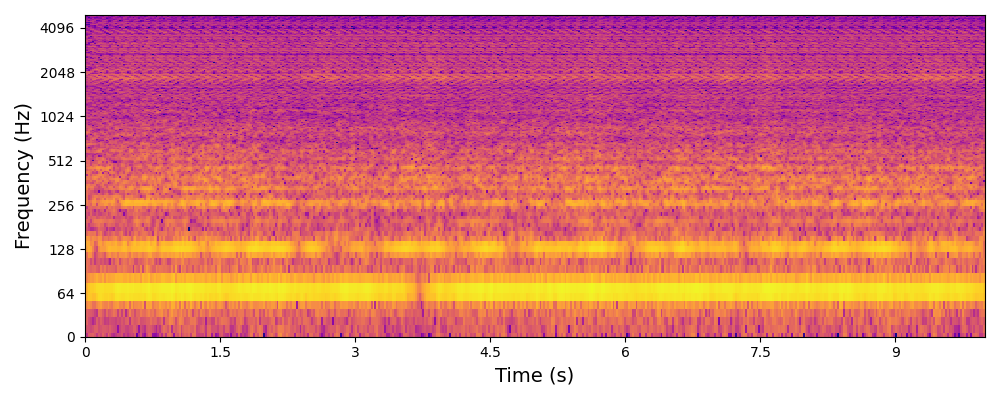

| Metadata | Caption | Ground Truth | Generated |
|---|---|---|---|
| Bearing, anomaly, axis damage, velocity of 24 krpm, location "A" | A bearing operating on velocity of 24 krpm with anomaly due to axis damage at location A |
 |
 |
| Gearbox, anomaly, damage type 2, model B, voltage of 2.3 (V), weight of 0 (g) | A gearbox model B operating on voltage of 2.3 (V) and weight of 0 (g) with anomaly due to damage type 2 |
 |
 |
| Fan, model, anomaly, over voltage | A fan model is running on over voltage with anomaly |
 |
 |
| Slider, ball-type, anomaly, damage, velocity 1000.0 (mm/s), acceleration 0.3 | A ball-type slider operating on velocity of 1000.0 (mm/s) and an accelera |